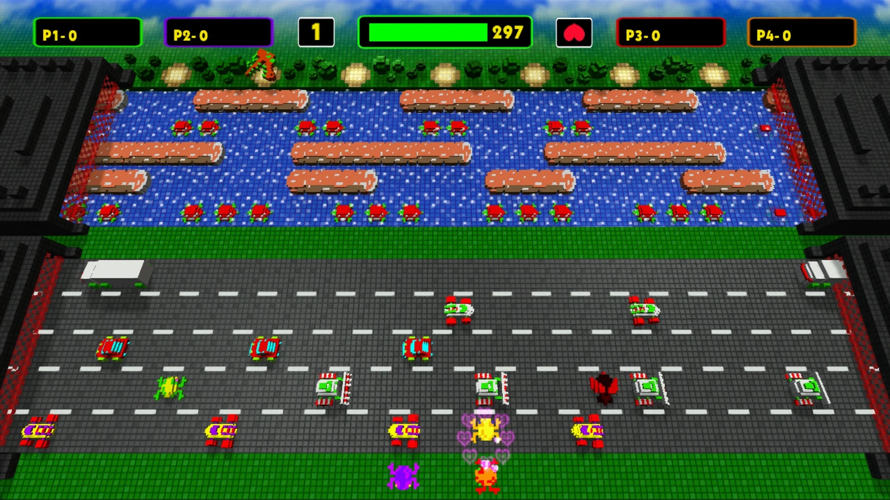

Estimation of Dynamic Discrete Choice Models in Continuous Time with an Application to Retail Competition
Peter Arcidiacono, Patrick Bayer, and Paul B Ellickson
April 24, 2024
For PSCI 7372: Game Theory for Political Scientists
What’s being modeled here?
- We want to understand the heterogeneity across firm types in the competitive impacts (outcome) of Walmart’s (player) entry (action) into a market.
- The discrete state space, $\chi$, models the market share of each firm.
- Each $x_k \in \chi$ is a vector that details the number of stores each firm has on the market.
How would rational players drive continuous time dynamics in such a space? This is the model here.
Players
- Each player indexed as $i$ is a firm in the grocery/supermarket industry. Nature indexed as $i=0$ also makes moves in the game.
- Players ($i > 0$) come in 3 types:
- Chain firms, $c$ ⛓️
- Fringe firms, $f$ üõçÔ∏è
- Walmart, $w$
- So, the state vector is:
$$x_k = \left( s^f_{1k}, s^f_{2k}, ..., s^c_{1k}, s^c_{2k}, ..., s^w_{k}, d_k \right)$$
Timing
Two stochastic processes in continuous time drive the competition in the market.
- Nature pushes the competitive state of the market according to a Markov Jump Process.
- Players move and push the competitive state of the market according to another competing Markov Jump Process.
Overall, a compound Markov Jump creates the dynamics in the game.
An imperfect but useful analogy - Frogger!

A sufficient definition for Frogger
How do you define the path of jumps a frog is taking in this game? One way to do it is to assume players are rational and to define two things:
- For each state of the world, when does new traffic spawn and, when does the frog jump?
- For each state of the world, where does the new traffic spawn and where does the frog jump to?
Jump-Hold construction of a Markov Jump Process
- The hold: While in state $x_k$, when to consider jumping.
- The jump: While in state $x_k$, when considering a jump, which state (where) to jump to (including remaining in the same state)?
Intensity Matrix representation of a Markov Jump Process
$$Q = \begin{bmatrix}
q_{11} & q_{12} & \cdots & q_{1K} \\
q_{21} & q_{22} & \cdots & q_{2K} \\
\vdots & \vdots & \ddots & \vdots \\
q_{K1} & q_{K2} & \cdots & q_{KK}
\end{bmatrix}$$
- $q_{kl}=\lim_{h \rightarrow 0} \frac{Pr(X_{t+h}=l | X_t=k)}{h}$, the hazard rate.
- Obeys Markovian property $Pr(X_{t+h}=l | X_t=k) = Pr(X_{t+h}=l | X_t =k, X_{t-1}, X_{t-2}, …)$
- Transition probability of the jump: $p_{kl}= \frac{q_{kl}}{\sum_{l\ne k}q_{kl}}$
- $q_{kk}=-\sum_{l\ne k}q_{kl}$ is the rate of remaining in the same state. Then the hold is given as $exp(-q_{kk})$.
Compound Markov Jump Process
- Nature’s markov process matrix: Q_0
- Move arrival process of the players (how does the frog jump?): Q_1
- In Q_1, note that $q_{kk} = \lambda$, a constant for all states.
- Transition probability is given as $\sigma_{jk}$, the probability of taking action $j$ in state $k$
- For convenience we also define, $l(j,k)$, the function which tells us the next state when action $j$ is taken in state $k$
- Turns out, both these matrices can just be added up to get the compound dynamics of the whole system: $Q = Q_0 + Q_1$
Utilities
There are 3 types of utility here:
- Flow utility, $u_{ik}$: There are just fixed costs and revenues of owning and operating a certain set of stores (i.e) for every state of the market
- Choice-specific utility $\psi_{ijk}$: The costs and revenues of making a choice at a given state of the world
- The choice set has only two discrete choices one of which can be made in each move arrival. Either open a store or close a store. $j \in J = { -1, 1 }$
- Choice-specific unobserved shock, $\epsilon_{ijk}$: Each firm may have some private costs/benefits from opening or closing a store we may not know about.
Flow utilities for chain firms ⛓️
$$\begin{align}
u_{ik}^{\text{c}} = s_{ik}^{\text{c}} \left( \beta_{0}^{\text{c}} + \beta_{1}^{\text{c}} \tilde{s}_{ik}^{\text{c}} + \beta_{2}^{\text{c}} s_k^{\text{w}} + \beta_{3}^{\text{c}} s_k^{\text{f}} + \beta_{4}^{\text{c}} s_{ik}^{\text{c}} + \beta_{5}^{\text{c}} d_k + \beta_{6}^{\text{c}} z \\ + \beta_{7}^{\text{c}} z s_{ik}^{\text{c}} \right) + e_{ik}^{\text{c}}
\end{align}$$
where $e_{ik}^{\text{c}} = \mu_{1}^{\text{c}} s_{ik}^{\text{c}} + \mu_{2}^{\text{c}} (s_{ik}^{\text{c}})^2 + \mu_{3}^{\text{c}} (s_{ik}^{\text{c}})$
Choice-specific utilities for chain firms ⛓️
$$\psi_{ijk} = \begin{cases} \eta_0^{\text{c}} + \eta_1^{\text{c}} z + \kappa_0^{\text{c}} + \kappa_1^{\text{c}} z & \text{if } s_{ik}^{\text{c}} = 0 \text{ and } j = 1, \\ \kappa_0^{\text{c}} + \kappa_1^{\text{c}} z & \text{if } s_{ik}^{\text{c}} > 0 \text{ and } j = 1, \\ \phi_0^{\text{c}} + \phi_1^{\text{c}} z & \text{if } s_{ik}^{\text{c}} > 0 \text{ and } j = -1, \\ 0 & \text{otherwise}. \end{cases}$$
Flow utilities for fringe firms üõçÔ∏è
$$u_{ik}^{\text{f}} = \beta^{\text{f}}_0 + \beta^{\text{f}}_1 s_k^{\text{c}} + \beta^{\text{f}}_2 s_k^{\text{w}} + \beta^{\text{f}}_3 s_k^{\text{f}} + \beta^{\text{f}}_4 d_k + \beta^{\text{f}}_5 z + \beta^{\text{f}}_6 z s_k^{\text{f}} + e_{ik}^{\text{f}}.$$
where $e_{ik}^{\text{f}} = \mu^{\text{f}}_0 + \mu^{\text{f}}_1 s_k^{\text{f}} + \mu^{\text{f}}_2 (s_k^{\text{f}})^2$
Choice-specific utilities for fringe firms üõçÔ∏è
$$\psi_{ijk} = \begin{cases} \eta_0^{\text{f}} + \eta_1^{\text{f}} z & \text{if } s_{ik}^{\text{f}} = 0 \text{ and } j = 1, \\ 0 & \text{otherwise}. \end{cases}$$
Strategies
- Choice set: There discrete choices can be made in each move arrival: Open a store or close a store or do nothing: $j \in J = { -1, 0, 1 }$
- A strategy would be, $\delta: \mathcal{X} \times \mathbb{R}^J \to \mathcal{A}$
- All the players know each other and also the rate at which their moves arrive. Obviously they all know what nature is doing.
- Notice here that the choice-specific unobserved shock, $\epsilon_{ijk}$ are not known to other players. The other utilities of each player is known to everyone.
Assumptions
- Assumption 1. (Discrete States). The state space is finite
- Assumption 2. (Bounded Rates and Payoffs). The discount rate⁠, move arrival rate, rates of state changes due to nature, and payoffs are all bounded
- Assumption 3. (Additive Separability). For each player and in each state the instantaneous payoff associated with choice is additively separable = Choice-specific utility + Choice-specific shock
- Assumption 4. (Distinct Actions). The payoff you get from doing nothing is nothing. For the other actions there is a clearly defined payoff and which state you would move the world towards.
- Assumption 5. (Private Information). Choice-specific shock is iid
Equilibrium concept
Remember that the process here is Markovian. So you need equilibrium to be SPNE and so the relevant equilibrium idea here is Markov Perfect Equilibrium.
$$\label{eq:multi:optimal} \delta_i(k, \varepsilon_i; \varsigma_i) = j \iff \psi_{ijk} + \varepsilon_{ij} + V_{i,l(i,j,k)}(\varsigma_i) \geq \psi_{ij'k} + \varepsilon_{ij'} + V_{i,l(i,j',k)}(\varsigma_i) \quad \forall j' \in \mathcal{A}_{ik}.$$
What’s the equillibruim or equillibria?
Instead of telling what actions to take, the authors characterize MPE as choice probabilities, ${ \sigma_1, \dots, \sigma_N }$ where each is a best response to given beliefs ⁠$\sigma_{-i}$.
Analysis
Brouwer’s Theorem says with the assumptions and this setup existence is guaranteed. In fact, the authors estimate the parameters of the utility function at this equilibrium.
Discussion
Why is this paper clever?
Out of all the choices that could be made, the paper makes specific model choices so that not only does the equilibrium exist but it is also identifiable!
- State space was made discrete and finite.
- Time was made continuous and infinite.
- Dynamics were made Markovian.
Where did that value function come from?
Here is a statement of the optimization problem in finite-state, continuous time with stochastic dynamics taken from here:
Belman equation is now Hamilton-Jacobi-Bellman equation:
Another way of saying a similar thing for finite-state, continuous time with deterministic dynamics: